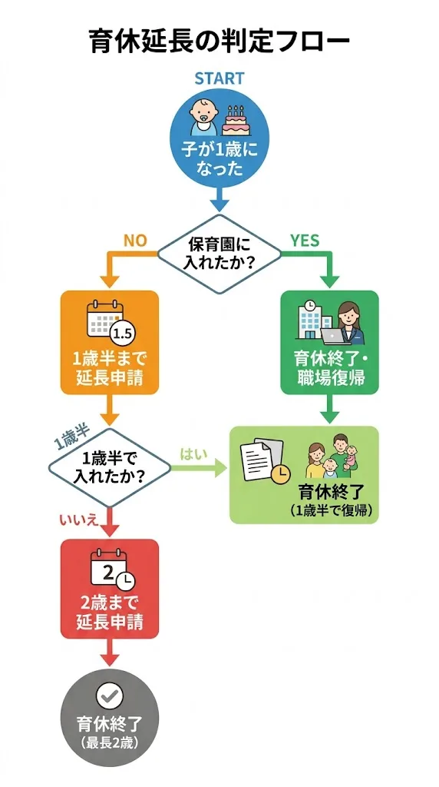

1. はじめに
「保育園に落ちてしまった。育休はどうすればいいの？」——保活に失敗したとき、多くの保護者が直面するのがこの問題です。
実は、保育園に入れなかった場合、育児休業は最長2歳まで延長することができます。ただし、延長には条件があり、手続きを期限内に行わなければなりません。
この記事では、育休延長の仕組み・条件・手続きをフロー図を使ってわかりやすく整理します。「自分は延長できるの？」という疑問をすっきり解消しましょう。
・育休を1歳6ヶ月・2歳まで延長できる条件
・不承諾通知の入手方法と期限
・会社・ハローワークへの手続きの流れ
2. 育休延長とは
育児休業は原則として子どもが1歳になるまで取得できます。しかし、一定の条件を満たせば、段階的に延長することが可能です。
| 段階 | 期間 | 概要 |
|---|---|---|
| 原則 | 子が1歳まで | 通常の育児休業期間 |
| 第1延長 | 1歳6ヶ月まで | 1歳時点で保育所に入れない場合に延長可 |
| 第2延長 | 2歳まで | 1歳6ヶ月時点でも保育所に入れない場合に再延長可 |
各段階の延長には、「保育所に入れなかったこと」の証明（不承諾通知書）が必要になります。単に「希望しない」だけでは延長できません。
3. 図解：延長可否の判定フロー
自分が育休を延長できるかどうか、以下のフロー図で確認してみてください。
延長OK！
延長OK！
（入園して復職）
（申し込みが必要）

延長のカギは「不承諾通知」です。保育園に申し込まなければ不承諾通知はもらえません。延長を検討している場合は、必ず保育園の利用申込をすることが前提条件です。
4. 延長の条件（一覧表）
育休延長が認められる具体的な条件をまとめました。最も一般的なのは「保育所に入所できない」ケースですが、他にも認められる事由があります。
| 延長段階 | 条件 | 必要な証明書類 |
|---|---|---|
| 1歳→1歳6ヶ月 |
・保育所に入所できない ・配偶者の死亡・疾病・離婚等 ・子の疾病・障害等 |
不承諾通知書（保育所入所不可の場合） |
| 1歳6ヶ月→2歳 |
・1歳6ヶ月時点でも保育所に入所できない ・上記と同様の事由が継続 |
不承諾通知書（再取得が必要） |
第2延長（2歳まで）を行う場合、1歳6ヶ月時点で改めて不承諾通知を取得する必要があります。1歳時点の通知書は使い回しできません。
5. 延長手続きの流れ
育休延長の手続きは、保育園への申し込みから始まり、会社・ハローワークへの申請まで複数のステップがあります。
不承諾通知を子の誕生日前日までに受け取るため、誕生日月の前月までに申し込みを完了させておく必要があります。世田谷区の締切は入園希望月の前月10日頃です。
申し込んだ保育所すべてから入所を断られた場合、市区町村から不承諾通知書が発行されます。大切に保管してください。
勤務先の人事・総務部門に育児休業延長申出書と不承諾通知書の写しを提出します。会社所定の書式がある場合はそちらを使用します。
育児休業給付金の延長はハローワークへの申請が必要です。多くの場合、会社が被保険者（従業員）の代わりに手続きを行います。
不承諾通知は1歳（または1歳6ヶ月）の誕生日の前日までに受け取る必要があります。誕生日月に申し込んでいては間に合わないため、1〜2ヶ月前には申し込みを済ませておくことが重要です。
6. 不承諾通知のもらい方（世田谷区）
世田谷区で不承諾通知を受け取るための手順を説明します。特別な手続きは不要で、通常の保育園入園申し込みをするだけです。
手順
- 保育園の利用申込をする（通常の入園申込と同じ手続き）
- 希望する保育所・認定こども園等を第1〜5希望で記入して提出
- 審査の結果、入所できなかった場合に不承諾通知書が送付される
- 通知書を受け取ったら、会社と給付金申請用に保管する
お住まいの区の区役所 支援課（保育担当）が申し込み先です。世田谷区では毎月申し込みが可能です。入園希望月の前月10日頃が締切となります。
7. 「落選狙い」問題と制度改正について
育休を延長する目的で、入園する気がないのに保育園に申し込む「落選狙い」が社会問題となっていました。これにより、本当に保育園を必要としている家庭が入れなくなるケースが生じていました。
この問題に対応するため、2025年の制度改正では、育休延長申請時に「保育所に入る意思があること」の確認が厳格化されました。具体的には、申請者が入園の意思を自己申告する仕組みが導入され、入園の意思がないと判断された場合は延長が認められなくなっています。
入園する意思がないのに申し込むと、延長が認められない場合があります。また、虚偽の申告は不正受給につながる可能性があります。制度を正しく理解したうえで、正直に申告しましょう。
一方、本当に保育園に入りたいのに入れなかった家庭については、従来通り延長制度を利用できます。保活を真剣に行ったうえで不承諾通知を受け取った場合は、正当な延長申請として認められます。
世田谷区の保育園空き状況を確認する
どの園・どの年齢クラスに空きがあるか、最新情報をチェックできます。
8. よくある質問
Q. 育休を延長するには何が必要ですか？
最も重要なのは不承諾通知書です。世田谷区では、保育所の利用申込をしたうえで入所できなかった場合に発行されます。この通知書を会社に提出することで延長申請ができ、ハローワークへの給付金延長申請にも使用します。
Q. 不承諾通知はいつまでに受け取ればいいですか？
1歳への延長（1歳6ヶ月まで）を行う場合は、子どもの1歳の誕生日の前日までに不承諾通知を受け取る必要があります。誕生日月の1〜2ヶ月前には申し込みを済ませておくと安心です。1歳6ヶ月から2歳への延長も同様に、1歳6ヶ月の誕生日前日までに通知の取得が必要です。
Q. 認可外保育施設に申し込んでも不承諾通知はもらえますか？
認可外保育施設への申し込みだけでは不承諾通知は発行されません。認可保育所・認定こども園など認可施設への申し込みが必要です。認可施設に申し込んで入れなかった場合に、市区町村から不承諾通知書が発行されます。